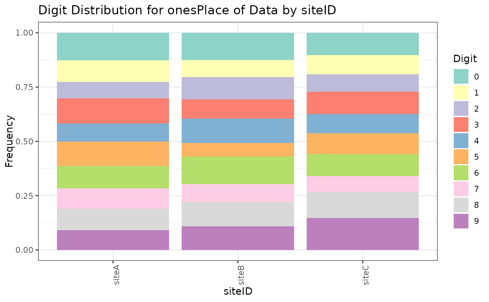
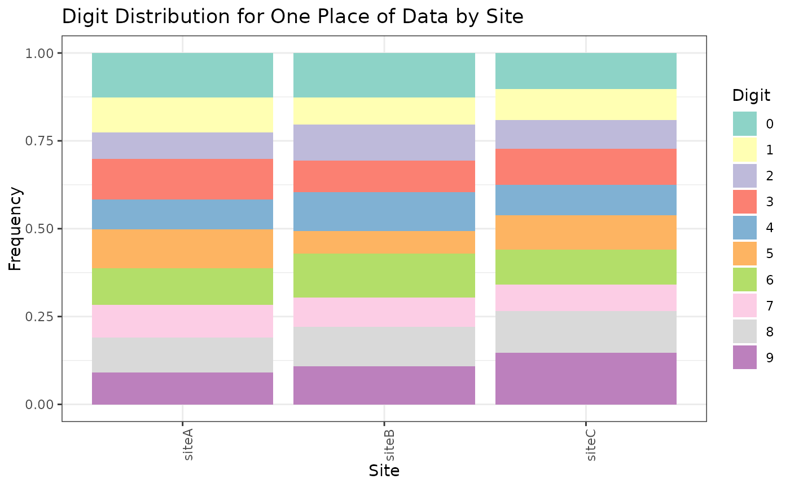

Create a stacked bar chart of digit distribution, with a grouping variable on the x axis, and the distribution of digits in a particular digit place on the y axis.
Usage
stackedDigitChart(
digit_data,
col_group,
col_digit,
group_label = rlang::ensym(col_group),
chart_title = glue::glue("Digit Distribution of Data by {group_label}"),
digit_palette = ggplot2::scale_fill_brewer(palette = "Set3"),
plot_theme = ggplot2::theme_bw()
)Arguments
- digit_data
A data.frame with a grouping column and at least one column for a digit place.
- col_group
<
data-masked> The column to group by.- col_digit
<
data-masked> The column with the digit place to be plotted.- group_label
An optional name to use for the grouping column in labels.
- chart_title
An optional title for the chart.
- digit_palette
An optional fill palette to use for the digits.
- plot_theme
An optional theme to apply to the plot.
Examples
sample_data <- data.frame(
siteID = sample(c("siteA", "siteB", "siteC"), 1000, replace = TRUE),
onesDigit = sample(0:9, 1000, replace = TRUE)
)
stackedDigitChart(sample_data, siteID, onesDigit)

stackedDigitChart(sample_data, siteID, onesDigit, "Site")

stackedDigitChart(sample_data, siteID, onesDigit, digit_palette = NULL)